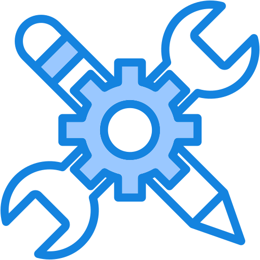

Contact
- Telegram: @veromanich
- E-mail: verenich.roman23@gmail.com
- Phone: +48 501267769
- Discord
Courses
- Yandex Practicum Python Developer Program
- Coursera – University of Toronto Learn to Program: The Fundamentals [Certificate](https://www.coursera.org/account/accomplishments/verify/9QACSP2F5SP2)
Languages
- - English: Pre-Intermediate
- - Polish: Upper-Intermediate
- - Russian: Native
Raman Viarenich
Full stack developer
About me
I started learning programming with Python, on which I've already completed several pet projects. I like development because it gives many opportunities to grow and learn new things. I enjoy creating the logic of web services and understanding how everything works inside.
Now I'm learning JavaScript to improve my knowledge of web development. I'm curious, motivated, and always try to learn something new. I believe that regular practice and interest will help me become a good developer.

Skills- Python: Django, REST API, Telegram Bot API, Djoser, Pytest, Unittest, OOP
- JavaScript (Basic)
- HTML & CSS (Bootstrap)
- Tools: Docker, Git, Postman, VS Code
- Databases: PostgreSQL, SQLite
- OS: Windows, Linux (Ubuntu)
Code
- Python ```python def factorial(n): if n == 0: return 1 return n * factorial(n - 1) # Example: print(factorial(5)) # Output: 120 ```
- JavaScript ```javascript function multiply(a, b){ return a * b } // Example: console.log(multiply(2, 1)); // 1 ```
Projects
- Content Sharing Service (https://github.com/veromanich/api_final_yatube)\ REST API for publishing content, managing favorites, and subscribing to authors.\ JWT authentication with Djoser, PostgreSQL, Docker, and CI/CD via GitHub Actions.\ **Tech stack:** Django REST Framework, PostgreSQL, Djoser, Docker, GitHub Actions
- Media Reviews API (https://github.com/veromanich/api_yamdb)\ Collaborative project for managing reviews and ratings of books, films, and music.\ Developed user registration, authentication, access control, and email verification.\ **Tech stack:** Django REST Framework, PostgreSQL, Djoser, Email Verification
- Telegram Bot Integration (https://github.com/veromanich/homework_bot)\ Telegram bot that periodically queries a REST API, logs its activity, and sends alerts to the user in case of errors.\ **Tech stack:** Python, Telegram Bot API, Logging, REST API